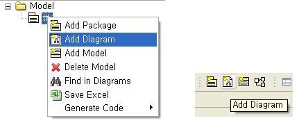

새 다이어그램 생성
도구는 프로젝트 내에서 새로운 다이어그램을 생성하는 것 이외에도 사용자가 원하는 경우 프로젝트를 생성하지 않고 단일 다이어그램만을 추가로 생성하여 작업할 수 있다.

그림 2.1-2 새로운 다이어그램의 생성
- 경로선택 - 새로운 다이어그램이 생성되는 모델 및 패키지 경로를 보여준다.
- 다이어그램 선택 - 새로이 생성 할 다이어그램의 종류를 선택한다.
- 다이어그램 이름 - 생성할 다이어그램의 명칭을 입력한다.
- 작성자 - 다이어그램의 작성자를 입력한다.
- 생성 일 - 다이어그램의 날짜를 입력한다.
- 아이콘 - 사용자가 원하는 다이어그램의 아이콘을 선택한다.
다이어그램 생성시 다이어그램의 명칭은 반드시 입력을 해야 한다. 같은 모델 혹은 같은 패키지 밑에 같은 다이어그램의 명칭을 적어서는 안 된다.